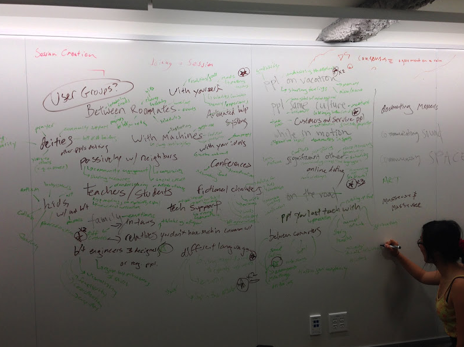

Hi, we're team Triple Squared and we are working on a project on everyday rich social communication. Project details TBA as they are refined. Check out our Github repo
Why "Triple Squared?" We are a team of three: Emily Cheng, M.J Ma, and Sarah Sterman. Our initials are CC, MM, and SS (Emily's legal name is Cheng Cheng), thus C^2 + M^2 + S^2.
Project Manager
Loves art, backpacking, urban exploration, running, social dance. Huge outdoors enthusiast and Couchsurfing fan.
@resalireDesign Lead
A designer, an artist and a programmer. A dancer, a yogi and a climber. Loves life and always up for new adventures :)
@hmilyEvaluation Lead
Builds things, reads things, cooks things, sometimes all at the same time.
Ideation and Team Forming
Our team brainstormed a wide range of ideas for communication. Our tactic was to first brainstorm different user groups and situations, then come up with communication needs for each category. We jotted all of our ideas on a whiteboard, and MJ even skyped in to join the conversation despite being in NY!
Photos from our brainstorming session:
Narrowing our ideas down to three, we have:
1) Everyday communication of little + authentic things
Communication Need: We share a lot of the big events in our lives, but don't have a way of feeling like we're a part of the daily gestalt or the small things. this is a way both to record the little good things for yourself, and to share them with friends and feel a part of their lives without the pressure that comes from seeing the kind of curated personalities you see on facebook, since you're documenting the details, not the big accomplishments.
Idea: I have a column on a webpage, and you have a column, and we post pictures and sound clips and videos and pieces of text from our days, and there's no context or differentiation except the column between us? Or even, you have a group of friends, and you can select names, and the inputs of the selected people just show up as a big collage of sights and sounds? So it emphasizes the little details in our lives, not the big important stuff that goes on facebook. And it's displayed all together with stuff our friends posted, so we feel more connected to all parts of their lives, not just text or deliberate pictures.
Target User: Friends or family members who are far away, especially people you don't talk to very often, or don't connect well with in conversation but who you still care about. Or on the flipside, for people who are very close to record and preserve authentic little moments in their lives (eg. significant other, parent-child).
Context: Input is done as you go about your daily life, whenever a little thing catches your eye. Reading it is done when you have free time you might be using to browse Facebook, for instance. This would involve immediate real-time communication, but also a way to create a log to preserve memories of these authentic moments.
2) Family and In-laws: communication between people of different cultures and customs
Communication Need: We are all influenced by the family we grow up in - from how we eat breakfast to our values and expectations. As people and families unite through relationships and marriage, the differences in our family traditions and backgrounds play an important role in forming this new unity and there is a pressing communication need for the differences.
Idea: The idea is to create an online platform where a user's family profile can be built through their answers to a series questions, and the profile can then be translated to another user's understand through a form of data visualization. The questions will be generated based on the users' relationships and will progress over time as the relationships progress. Besides the active questions, passive data can also be collected from the users' daily activities for analysis.
Target User: Couples in a relationship, in-laws.
Context: Couples can get to know each other's family backgrounds as their relationship progresses, and this will help them understand their differences and conflicts better. As a couple move further forward in their relationship and start prepping for marriage, the in-laws can also start to get to know each other on a deeper level.
3) Online dating: through personalized recommendations from online social networks
Communication Need: In real-life situations, especially in certain cultures, potential dates are directly introduced by friends or family, who play the "matchmaker" role, ie. communication of perceived compatability to two people. This is often successful because they know the two people personally and can perhaps better gauge their personalities and potential compatibility. Currently online dating doesn't match this real-world model because the people whose profiles you read on a dating site cannot be verified and they are far removed from your social network.
Idea: The idea is to create an app that users can use on a daily basis and in their free time to play "matchmaker" between friends on an online social network (ie. Facebook API), benefit being that social networks are much more vast than real life friend groups and thus there is more reach. Perhaps similar to a concept of setting up blind dates, the user either creates pairings or is presented with pairings possibilities that they identify as being potentially compatible or not based on their real life knowledge of the two people's personalities and preferences. The app would be constructed to allow users to do this on a daily basis as a casual, fun activity, similar to how people use Tinder and swipe through profiles on a multiple-times-per-day basis.
Target User: Young adults to mid-aged adults who have a sizable Facebook network, either single, or have many single friends.
Context: As mentioned before, users would use this app to create pairings on a daily basis as a casual, fun activity, similar to how people use Tinder and swipe through profiles on a multiple-times-per-day basis. Low stakes enviornment that engages the user whenever they are bored and have down time.
Storyboarding TBA